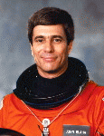

Lyndon B. Johnson Space Center
Houston, Texas 77058
|
National Aeronautics and Space Administration Lyndon B. Johnson Space Center Houston, Texas 77058 |
 |
Biographical Data |
||
JOHN E. BLAHA (COLONEL, USAF, RET.)
NASA ASTRONAUT (FORMER)
PERSONAL DATA: Born August 26, 1942, in San Antonio, Texas. Married to the former Brenda I. Walters of St. Louis, Missouri. They have three grown children and two grandchildren.
EDUCATION: Graduated from Granby High School in Norfolk, Virginia, in 1960; received a bachelor of science in engineering science from the United States Air Force Academy in 1965 and a master of science in astronautical engineering from Purdue University in 1966.
ORGANIZATIONS: Association of Space Explorers; Purdue Alumni Association; Society of Experimental Test Pilots; Air Force Academy Association of Graduates; Chairman, Board of Directors Brooks Aerospace Foundation.
SPECIAL HONORS: Inducted into the Astronaut Hall of Fame, Russian Order of Friendship Medal, 2 NASA Distinguished Service Medals, NASA Outstanding Leadership Medal, NASA Exceptional Service Medal, 5 NASA Space Flight Medals, Countdown Magazine Outstanding Astronaut of 1991, Defense Superior Service Medal, Legion of Merit, 2 Air Force Distinguished Flying Crosses, Defense Meritorious Service Medal, 3 Meritorious Service Medals, 18 Air Medals, Air Force Commendation Medal, the British Royal Air Force Cross, the Vietnam Cross of Gallantry, Purdue Outstanding Aerospace Engineer Award, and the Purdue Engineering Alumnus Award. Outstanding Pilot, F-4 Combat Crew Training. Outstanding Junior Officer of the Year, 3rd Tactical Fighter Wing. Distinguished Graduate Air Force Test Pilot School. Distinguished Graduate Air Command and Staff College. University Roundtable Annual Best and Brightest Award. Honorary Grand Marshall Fiesta Flambeau Parade. Honorary Grand Marshall Battle of Flowers Parade. Granby High School Hall of Fame. Planet Blaha named in his honor by the International Astronomical Union and Smithsonian Astrophysical Observatory.
AIR FORCE EXPERIENCE: Blaha received his pilot wings at Williams Air Force Base, Arizona, in 1967. He was subsequently assigned as an operational pilot flying F-4, F-102, F-106, and A-37 aircraft (completing 361 combat missions in Vietnam). He attended the USAF Aerospace Research Pilot School at Edwards Air Force Base, California, in 1971, and piloted the NF-104 research aircraft to 104,400 feet. Following graduation, he served as an F-104 instructor pilot at the test pilot school, teaching low lift-to-drag approach, zoom, performance, stability/control, and spin flight test techniques. In 1973, he was assigned as a test pilot working with the Royal Air Force at the Aeroplane and Armament Experimental Establishment, Boscombe Down, United Kingdom. During a 3-year tour, he flew stability/control, performance, spin, and weapons delivery flight tests in the Jaguar, Buccaneer, Hawk, and Jet Provost aircraft. In 1976 he attended the USAF Air Command and Staff College. After graduation, he was assigned to work for the Assistant Chief of Staff, Studies and Analyses, at Headquarters USAF in the Pentagon. During this tour, he presented F-15 and F-16 study results to Department of Defense, State Department, and congressional staffs.
NASA EXPERIENCE: Selected as an astronaut in May 1980, Blaha has logged 161 days in space on 5 space missions. He served as pilot on STS-33 and STS 29, was Spacecraft Commander on STS-58 and STS-43, served on Mir-22 as Board Engineer 2, and was a Mission Specialist on STS-79 and STS-81.
In addition to flying 5 space missions, Blaha has served as the Chairman, NASA Space Flight Safety Panel; Weather Manager, Mission Management Team; lead spacecraft communicator; member, NASA Space Shuttle Improvement Panel. Blaha also led the design, development, and integration of the Orbiter Head Up Display system. Additionally, he led the development of contingency abort procedures which significantly improve crew survivability in the event of multiple main engine failures during ascent. He has logged more than 7,000 hours of flying time in 34 different aircraft, and has written numerous technical articles on spacecraft performance and control.
John Blaha retired from NASA in September 1997 to return to his hometown of San Antonio, Texas, where he joined the Executive Management Group of the United Services Automobile Association
SPACE FLIGHT EXPERIENCE: STS-29 Discovery launched from Kennedy Space Center, Florida, on March 13, 1989, and landed at Edwards Air Force Base on March 18, 1989. During this very successful mission the five-man crew aboard Shuttle Discovery deployed the East Tracking and Data Relay Satellite, and performed eight scientific/medical experiments.
STS-33 Discovery (November 22-27, 1989). Launched at night, this five-day mission carried Department of Defense payloads and other secondary payloads. After 79 orbits of the Earth, this highly successful mission concluded with a hard surface landing on Runway 4 at Edwards Air Force Base, California.
STS-43 Atlantis (August 2-11, 1991) launched from the Kennedy Space Center carrying a five person crew. During the nine-day mission the crew deployed the West Tracking and Data Relay Satellite, and conducted 32 physical, material, and life science experiments that supported the development of the Extended Duration Orbiter and Space Station. After 142 orbits of the Earth, this very significant mission concluded with a landing on Runway 15 at the Kennedy Space Center, Florida.
STS-58 Columbia (October 18 to November 1, 1993) launched from the Kennedy Space Center carrying a seven-person crew. This record duration fourteen-day life science research mission has been recognized by NASA management as the most successful and efficient Spacelab flight that NASA has flown. The crew performed neurovestibular, cardiovascular, cardiopulmonary, metabolic, and musculoskeletal medical experiments on themselves and 48 rats, expanding our knowledge of human and animal physiology both on earth and in space flight. In addition, the crew performed 16 engineering tests aboard the Orbiter Columbia and 20 Extended Duration Orbiter Medical Project experiments. Landing was at Edwards Air Force Base on Runway 22.
Blaha began Russian language training in August 1994 at the Defense Language Institute in Monterey, California, and commenced an intensive training program at the Cosmonaut Training Center, Star City, Russia in January 1995. He launched on STS-79 on September 16, 1996. After docking he transferred to the Mir Space Station. Assigned as a Board Engineer 2, he spent the following 4 months with the Mir 22 Cosmonaut crew conducting material science, fluid science, and life science research. Blaha returned to earth aboard STS-81 on January 22, 1997.
MAY 2008
This is the only version available from NASA. Updates must be sought direct from the above named individual.